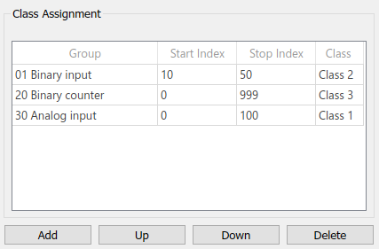

DNP3 - Client Class — Configures integrity polling, unsolicited messaging and class assignment
This block is used to configure event classes in the remote server.
Assign events to event classes
Prompt the server to send event indications without an explicit request (unsolicited messaging)
Read classes at once (integrity poll)
If set to 1, the block sends a read class request according to the classes selected in the Integrity Poll parameter. This happens at each sample hit according to the block's sample time. It is strongly recommended to not permanently set the input port to 1 as this significantly increases processing time and network traffic.
Data Type: boolean
This block does not have any output ports.
Apply the Client ID of the corresponding Client Setup block. Must range between 0 and 65519.
The Client Class block relates to a specific client-server relation given by Client ID and Server ID.
Apply the ID of the remote server as specified in the Server table in the corresponding Client Setup block mask. Must range between 0 and 65519.
Defines the base sample time at which this driver block gets its sample hit. This parameter can also be set to -1 for inherited sample time. The units are in seconds.
Select the classes for unsolicted messaging. The Client sends enable unsolicited message requests for the selected classes and disable unsolicited message requests for any other classes.
The request causes the remote server to send event information and actual values once a class event occurs. According to the response received, the outputs of related Client Command blocks will be updated as long as the group, variation and range parameters match the response header.
Select the classes for an overall read request. The client sends the read class request to the remote server right after connection and also when the Poll input port is 1.
The request triggers the remote server to send a response including all the current values whose points are assigned to the requested classes. The response will update the outputs of all Client Command blocks whose group, variation and range parameters match the response header.
This table assigns point range events to event classes. Use the buttons to add, move or delete point ranges. The block sends an assign class request for each row. The maximum number of rows supported is 255. Class assignment has an impact on the amount of data in unsolicited messages and in responses on integrity polls. It has a further impact on the update rate of unsolicited messages.

Group: The point group whose events will be assigned to a class. Refer to the DNP3 usage notes to learn more about point groups and event groups
Start Index: The first index of the point range. Must range between 0 and 999
Stop Index: The stop index of the point range. Must range between 0 and 999 for specific ranges. A value greater than 999 causes the remote server to assign the whole group to the class
Class: The class to which the point range will be assigned